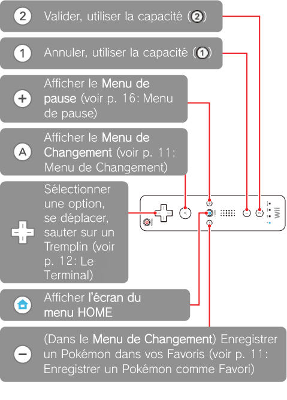
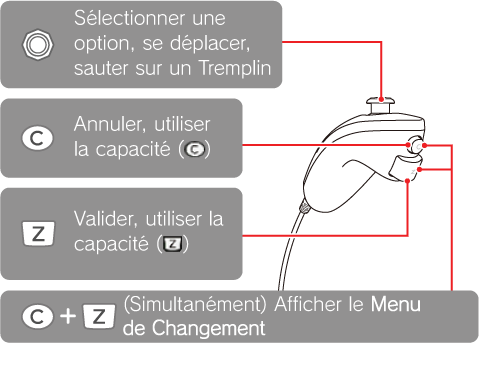
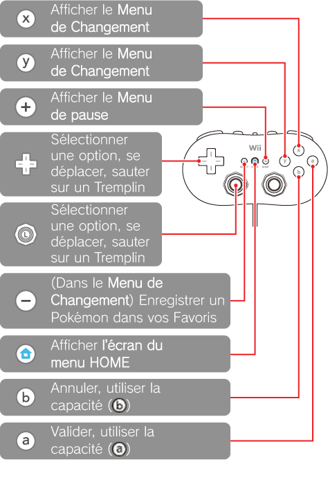
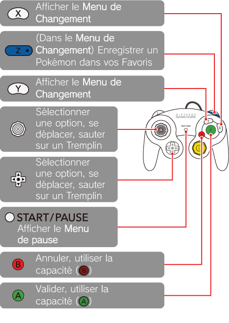

7 |
Les commandes |
 |
|
Ce jeu peut se jouer de 1 à 4 joueurs. Vous pouvez jouer avec une télécommande Wii, un Nunchuk, une manette classique ou encore une manette Nintendo GameCube. Toutefois, ce mode d’emploi se concentrera principalement sur les commandes de la télécommande Wii.
Note: si vous jouez seul avec une manette autre que la télécommande Wii, veuillez consulter la page 18: Jouer avec une manette autre que la télécommande Wii. Attention: lorsque vous jouez seul, vous ne pouvez pas utiliser le Nunchuk.
Télécommande Wii Tenez la télécommande en position horizontale.  Autres manettes Selon la manette que vous utilisez, reliez votre Nunchuk ou votre manette classique à votre télécommande Wii, ou votre manette Nintendo GameCube à votre console Wii. Ensuite, réglez les options du Mode Coop. (voir p. 18: Commencer le Mode Coop.).
Dans ce jeu, si vous branchez un Nunchuk ou une manette classique sur une télécommande Wii, deux joueurs peuvent s’amuser en même temps: l’un peut utiliser la télécommande Wii tandis que l’autre utilise le Nunchuk ou la manette classique.
Ne tirez pas sur le Nunchuk ou la manette classique pendant le jeu. Le câble qui relie cette manette d’extension à la télécommande Wii pourrait se débrancher et causer un accident.
Le Nunchuk Vous ne pouvez pas utiliser le Nunchuk lorsque vous jouez seul. Si vous jouez à plusieurs, vous pouvez l’utiliser en le branchant à une télécommande Wii. Toutefois, le Nunchuk ne permet pas d’afficher le Menu de pause ni d’enregistrer un Pokémon dans vos Favoris.  Manette classique  Manette Nintendo GameCube  |
 |
 |
 |